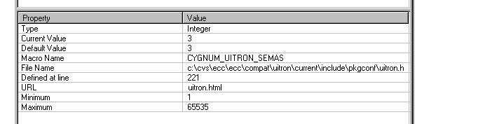
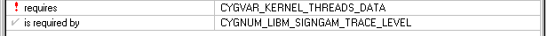

The properties table is a vertical pane, initially located on the right hand side of the Configuration Tool window. It displays the attributes of the currently selected item in the configuration pane:

The full set of properties displayed depends on the type of the item, but for all configurable items the following will be displayed:
Macro Name — the macro corresponding to the configurable item
Current Value — the current value
Default Value — the default value (as currently saved in the header file)
Documentation URL — a URL which documents the use of the item
Header file name — the header file in which the item is defined
Header file definition line — the line at which the item is defined
Any consistency rules associated with this item.
The properties table may not be used to change items' values, but certain properties may be double-clicked:
The header file name — to launch an editor to browse the header file. Note that you can only edit a header file in a saved document.
The documentation URL — to navigate to the documentation, using the internal browser pane or external browser.
A referenced consistency rule macro name — to navigate to the associated item in the configuration pane
The final properties displayed in the Properties Table are any applicable to the section called Consistency Rules in Chapter 3. An exclamation point or check precedes the failing rules to indicate the current state (failing or satisfied). If the rule is not currently being applied (because the item which contains the rule is inactive) the mark will be grayed.
